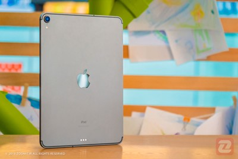
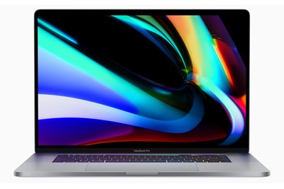
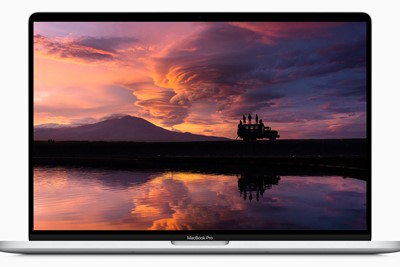

اپل در نهایت از موضع خود عقبنشینی کرد و آیپد را تبلتی ایدهآل در کنار کامپیوترهای توانمند مکبوک، معرفی کرد.
 پرچمداری بی نظیر از اپل
پرچمداری بی نظیر از اپل
پیشنهاد سردبیر

تبلت
8 نظر
آیپد 12/9 اینچی و مک بوک پرو 16 اینچی اواخر ۲۰۲۰ با فناوری mini-LED به بازار عرضه میشود
نسترن مظاهری|دوشنبه، 12 خردادماه 1400
براساس اعلام مینگ چیکو، آیپد ۱۲/۹ اینچی و مکبوک پرو ۱۶ اینچی اپل با بهرهمندی از نمایشگر mini-LED اواخر ۲۰۲۰ به بازار عرضه میشود.
iOS 13.2 و iPadOS 13.2 نسخههای جدید سیستمعاملهای اپل برای آیفونها و آیپدها هستند که بهتازگی منتشر شده و تغییرات زیادی بههمراه آوردهاند.

لپ تاب
12 نظر
مک بوک پرو 16 اینچی اپل همزمان از دو نمایشگر اکسترنال 6K پشتیبانی میکند
نسترن مظاهری|دوشنبه، 12 خردادماه 1400
مکبوک پرو ۱۶ اینچی اپل که بهتازگی معرفی شده است، همزمان از دو نمایشگر 6K پشتیبانی میکند.

لپ تاب
18 نظر
توضیحات فیل شیلر درمورد کیبورد مک بوک پرو 16 اینچ اپل
نسترن مظاهری|دوشنبه، 12 خردادماه 1400
فیل شیلر بهتازگی در مصاحبهای، توضیحاتی را در رابطه با کیبورد مجیک، تاچبار و موارد دیگر بهکاررفته در مکبوک پرو ۱۶ اینچ ارائه داده است.